<div id="container">
		<div class="content-container">
			<table id="pg-evento" class="content">
				<tr>
					<td class="theme">
						<div class="cell">
							<div class="content-limit">
								
								<div class="lettering t-bitter t-yellow">
									<span class="nuvem t-quicksand">NUVEM</span>
									<span class="segundo t-white">Segundo o conceito de "Cloud Computing".</span>
									<span class="somos t-white">Somos  acompanhados por uma nuvem</span>
									<span class="conhecimentos t-white italic">de conhecimentos, ferramentas e possibilidades </span>
									<span class="manipulamos">Manipulamos essa nuvem para realizar as mais diversas tarefas. Nesse conceito, as pessoas e coletivos atuam transitando, organizando, criando interações e relações que resultam em coisas sensíveis.</span>
								</div>
								<div class="sub first">
									<span class="title t-bitter t-yellow italic">Conexões<br/></span>
									<span class="text t-bitter t-white">As conexões se relacionam ao compartilhamento de informações, uma das características da nuvem, que proporciona ampla cobertura e disposição de conhecimentos assimiláveis simultaneamente por várias pessoas.</span>
								</div>
								<div class="sub">
									<span class="title t-bitter t-yellow italic">Coletivo<br/></span>
									<span class="text t-bitter t-white">Esta edição busca proporcionar a junção de ideias em um meio acessível à todos, onde qualquer um pode se apropriar de uma criação e agregar suas potencialidades à ela. Assim o evento se completa, se abrindo às possibilidades proporcionadas pelo design e à absorção de novos conceitos, criando um ciclo de novas experiências.</span>
								</div>
								<div class="sub">
									<span class="title t-bitter t-yellow italic">Compartilhamento<br/></span>
									<span class="text t-bitter t-white">A internet possibilita o acesso às últimas informações. Então, durante o evento, a equipe organizadora e os participantes compartilharão informações sobre as atividades para que todos possam acessá-las por meio de fotos ou vídeos em tempo real.</span>
								</div>
								<div class="sub">
									<span class="title t-bitter t-yellow italic">Novos conceitos<br/></span>
									<span class="text t-bitter t-white">O evento busca expandir a gama de conhecimentos daqueles que são novos no universo do design e apresentar outras possibilidades aos já familiares a essa área, proporcionando a troca de experiências e informações entre os participantes.</span>
								</div>
								<div class="sub patrocinio">
									<span class="title t-bitter t-yellow italic">Patrocínio<br/></span>
									<a href="http://www.arcasolutions.com" target="_blank"></a>
									<a href="http://www.lecom.com.br" target="_blank"></a>
									<a href="http://www.sofiaolbrich.com.br" target="_blank"></a>
									<a href="http://www.tayu.com.br" target="_blank"></a>
									<a href="http://zupi.com.br" target="_blank"></a>
									<a href="http://www.acasadoartista.com.br" target="_blank"></a>
								</div>
								<div class="sub apoio">
									<span class="title t-bitter t-yellow italic">Apoio<br/></span>
									<a href="http://unesp.br" target="_blank"></a>
									<a href="http://www.faac.unesp.br/departamentos/ddi/" target="_blank"></a>
									<a href="http://www.faac.unesp.br" target="_blank"></a>
								</div>
								<div class="sub organizacao">
									<span class="title t-bitter t-yellow italic">Organização (C.O.I.D.)<br/></span>
									<a class="t-bitter t-white" href="http://www.facebook.com/cah.anselmo" target="_blank">Carol Anselmo</a>
									<a class="t-bitter t-white" href="http://www.facebook.com/camila.gondo" target="_blank">Camila Gondo</a>
									<a class="t-bitter t-white" href="http://www.facebook.com/danielsc.saintz" target="_blank">Daniel Ito</a>
									<a class="t-bitter t-white" href="http://www.facebook.com/edgooda" target="_blank">Eduardo Gooda</a>
									<a class="t-bitter t-white" href="http://www.facebook.com/isisgaona" target="_blank">Ísis Gaona</a>
									<a class="t-bitter t-white" href="http://www.facebook.com/jessicamwm" target="_blank">Jéssica Garcia</a>
									<a class="t-bitter t-white" href="http://www.facebook.com/juliayuri.landimgoya" target="_blank">Júlia Goya</a>
									<a class="t-bitter t-white" href="http://www.facebook.com/junior.gois" target="_blank">Júnior Góis</a>
									<a class="t-bitter t-white" href="http://www.facebook.com/leticiapanichi" target="_blank">Letícia Panichi</a>
									<a class="t-bitter t-white" href="http://www.facebook.com/may.afmachado" target="_blank">Maísa Fernandes</a>
									<a class="t-bitter t-white" href="http://www.facebook.com/nat.sentanin" target="_blank">Natália Sentanin</a>
									<a class="t-bitter t-white" href="http://www.facebook.com/pedro.pinhata" target="_blank">Pedro Pinhata</a>
									<a class="t-bitter t-white" href="http://www.behance.net/minutti" target="_blank" title="AWAAAY!">Felipe Cabral Minutti (site)</a>
									<a class="t-bitter t-white" href="http://www.facebook.com/murilomugga" target="_blank">Murilo Tanajura (site)</a>
								</div>
							</div>
						</div>
					</td>
					<td class="history">
						<div class="cell">
							<div class="content-limit">
								
								<div class="lettering t-bitter t-yellow">
									<span class="interdesigners italic">O Interdesigners é um evento anual</span>
									<span class="unesp italic t-white">da UNESP de Bauru</span>
									<span class="reune t-quicksand t-red">que reúne alunos, profissionais e docentes</span>
									<span class="desde">desde 1991</span>
									<span class="promovendo t-red italic">promovendo a troca de informações, a discussão e a prática do Design e áreas relacionadas.</span>
									<span class="organizado">Organizado pelos estudantes e docentes dos cursos de Design Gráfico e Design de Produto, com o apoio do Departamento de Design e da Faculdade de Arquitetura, Artes e Comunicação.</span>
								</div>
							</div>
						</div>
					</td>
				</tr>
			</table>
		</div>
	</div>
